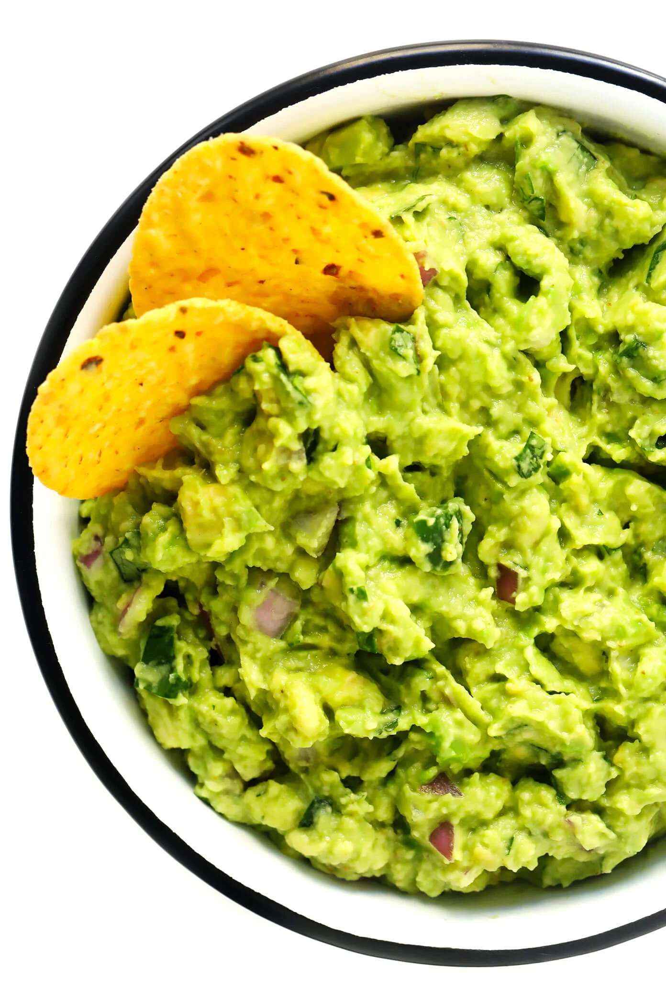

Guacamole Recipe
Home

source: gimmesomeoven.com
Description
My all-time favorite guacamole recipe is quick and easy to make, naturally gluten-free and vegan, and always the hit of the party.
Ingredients
- 3 ripe avocados, peeled and pitted
- 1 jalapeño, cored and finely diced (add more or less to taste)
- 1/2 cup finely diced red onion
- 1 Tb fresh lime juice
- 1/3 cup fresh cilantro, finely chopped
- 1/2 tsp fine sea salt
- 1/4 tsp ground cumin
- Optional: 1 roma tomato, cored and chopped
Steps
- In a medium mixing bowl, use a fork or a potato masher to mash the avocados to your desired consistency.
- Stir in the jalapeño, onion, lime juice, cilantro, salt, cumin until well-mixed. (If adding tomatoes, stir them in at the very end.)
- Taste and season with extra salt (plus extra lime juice, jalapeño and/or cilantro) if needed.
- Serve immediately and enjoy!
Notes
Storage Instructions: To store this guacamole, cover the bowl with plastic wrap (so that the plastic is literally touching the entire top layer of the guacamole) and refrigerate for up to 2 days before serving.